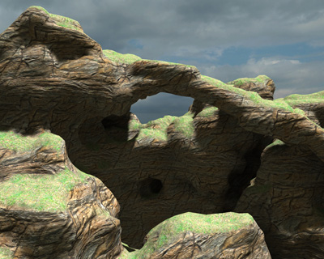
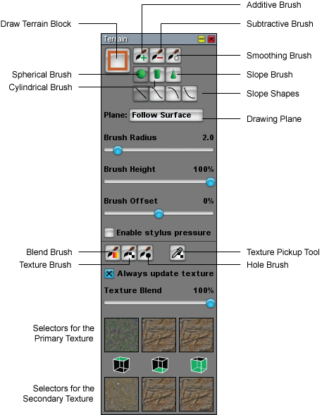
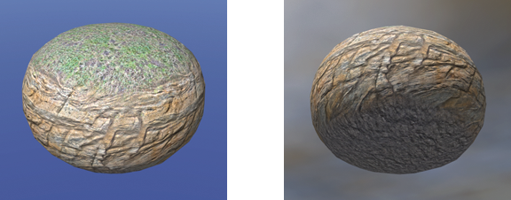
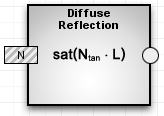
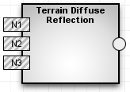
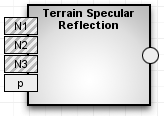
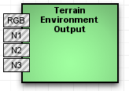

Terrain
From C4 Engine Wiki

In addition to this page, there is a Terrain Tutorial available.
Contents |
Terrain Overview
Terrain data in C4 is represented by a three-dimensional grid called a voxel map. A single cube in the voxel map is called a voxel, and it contains information about the density of the terrain and the materials used at its location. In a C4 world, an entire voxel map is stored in a single node called a block node. The voxel map stored in a block node is divided into a set of cubic volumes measuring 16 voxels on each side. Each 16×16×16 cube defines the terrain for a separate terrain geometry node owned by the block. Most of the 16×16×16 cubes are either completely solid or completely empty, and so do not result in the creation of any geometry. The important cubes are those that contain both solid space and empty space, and for these cubes, the engine creates a triangle mesh representing the surface of the terrain.
In order to achieve high performance, the engine automatically creates terrain geometries at three different voxel resolutions, and these geometries are arranged in an octree structure for fast visibility culling. When rendering terrain, the engine chooses to show lower resolution meshes at distances farther from the camera. A special algorithm is used to seamlessly stitch together adjacent meshes of differing resolutions. (This multiresolution voxel terrain stitching algorithm is exclusive to the C4 Engine.)

Terrain Tools
All of the tools associated with creating and editing terrain are contained in the Terrain Page, shown in Figure 2. The Terrain Page can be found inside the World Editor under the Earth tab.
Terrain Blocks
The Terrain Block tool is used to create a new terrain block. A terrain block can be initialized with a flat plane, data from a height field texture, or data from a raw voxel map exported by another program. Then the terrain editing tools can be used to modify the geometry that is created.
Brush Shape
Terrain geometry is edited using additive and subtractive sculpting brushes having either a spherical or cylindrical shape. Terrain textures are also edited using the same brush shapes. The size of a brush is measured in voxels and is controlled by the Brush Radius slider.
Brush Position
The position of a brush is controlled by two settings. The Brush Offset slider specifies how far above or below the terrain surface the center of the brush should be moved as you are drawing. When it is set to 0%, the center of the spherical or cylindrical brush coincides with the point clicked on the terrain surface. A value of +100% means that the brush is raised outward by its full radius, meaning that a spherical brush barely skims the surface and the base of a cylindrical brush is tangent to the surface. A value of −100% goes the other way, moving the brush inward by its full radius.
Once you've begun drawing by clicking a brush on a piece of terrain, where it can go from there is controlled by the Plane menu. There are three drawing planes that constrain the brush to a flat plane containing the point originally clicked, and there is a special mode that allows the brush to follow the contours of the existing terrain surface. The four settings available in the Plane menu are as follows.
- Follow Surface. The brush follows the contours of the terrain surface that existed before the mouse was clicked. Changes to the surface before the mouse button is released do not influence the position of the brush at all.
- Horizontal Plane. The brush is constrained to the horizontal plane containing the starting point that was clicked on.
- Tangent Plane. The brush is constrained to the plane tangent to the starting point that was clicked on.
- Camera Plane. The brush is constrained to the plane containing the starting point and perpendicular to the direction in which the camera is facing.
Editing Terrain Geometry
To edit terrain, select a brush shape and size, a brush offset, and a drawing plane, and then simply click on an existing piece of terrain in the scene. Material will either be added or subtracted from the terrain as you drag the mouse depending on whether an additive or subtractive brush is selected. If you don't like your changes, you can easily undo with Ctrl-Z (Cmd-Z on the Mac).
A Flattening Tool
A flattening tool can be created by selecting a subtractive cylindrical brush, moving the Brush Offset slider to +100%, and selecting the Horizontal Plane constraint. Click on the terrain at the elevation where you would like the ground to be and drag the mouse. The bottom of the cylindrical brush will coincide with the desired ground level, so anything above that elevation (up to the brush's height) will be subtracted away leaving flat ground behind.
A Tunnel Boring Machine
A tunnel boring machine can be created by selecting a subtractive cylindrical brush and the Camera Plane constraint. Any brush offset less than +100% will work, but an offset near 0% usually produces the best results. Position the camera so that it is facing the desired position of the tunnel opening and click the mouse at the center of the tunnel, but do not drag. Continue clicking inside the tunnel to dig deeper into the terrain.
Applying Textures to Terrain
So that it is possible to apply textures to terrain having surfaces like long vertical cliffs, cave interiors, and the undersides of arches, the terrain system in C4 utilizes a triplanar projection to calculate texture coordinates. In a triplanar projection, the coordinates of each vertex are projected onto the three planes perpendicular to the three coordinate axes. These texture coordinates are then used to perform three texture fetches, and the colors are blended together based on the normal direction.
As shown in Figure 3, a different texture map can be applied to top-facing surfaces that are mostly horizontal, bottom-facing surfaces that are mostly horizontal, and all surfaces that are mostly vertical. Both a primary and secondary texture map can be selected for each of these directions in the Terrain Page. The icon between the primary and secondary texture indicates which surface they apply to.

Technical note: In the cases that the normal vector has a negative x component, a positive y component, or a negative z component, the s texture coordinate is negated so that the two tangent fields created by the triplanar projection are continuous. One tangent field has a right-handed winding in the x-y plane, and the other has a right-handed winding in the x-z plane.
The Texture Blend slider controls how the two sets of three textures are blended at each voxel. A value of 0% means that only the primary textures are visible, and a value of 100% means that only the secondary textures are visible.
The textures that are applied to terrain come from a special type of texture map called a terrain palette. Terrain palettes can contain 9, 18, or 36 textures, and they are created through a special import procedure. See the Creating a Terrain Palette article for more information.
The scale of the textures applied to terrain is controlled by the Texcoord scale setting under the Terrain Texcoord Settings heading in the Texcoords tab of the Material Manager.
The Blend Brush is used to paint new texture blending information onto the terrain. Wherever it is used, the blend parameters are set to the current value specified by the Texture Blend slider. The Texture Brush changes the texture settings wherever it is used to those currently selected in the Terrain Page.
The Hole Brush is a tool that paints a special material ID onto the terrain that tells the engine not to generate triangles at those locations. This is useful for punching holes into a terrain surface in order to create an entrance to some interior structure. Holes can be restored by using the Texture Brush to paint an ordinary material back onto the terrain surface.
The Texture Pickup tool samples the terrain where it is used and sets the current texture selections to whatever had been used on the terrain at that location.
Terrain Shaders
Shaders to be used with terrain must be created using the Shader Editor. Terrain shaders cannot be created using the material attributes listed under the Diffuse, Specular, and Ambient tabs in the Material Manager. Since the terrain texturing is different from other types of geometry, some of the ordinary shader processes do not work with terrain texture palettes. In these cases, special terrain counterparts have been provided that perform the correct calculations. The following table lists the shader processes that have special terrain versions.
| Ordinary Process | Terrain Process | Notes |

| 
| Texture map fetches from a terrain texture palette must use the Terrain Texture process instead of the ordinary Texture Map process. |

| 
| Normal map fetches from a terrain texture palette must use the Terrain Normal 1, 2, and 3 processes instead of the ordinary Normal Map process. In a terrain shader, all three Terrain Normal processes should be used together with the same normal map palette, and their outputs should be directed to the Terrain Diffuse Reflection, Terrain Specular Reflection, and/or Terrain Environment Output processes. |
|  |  | The diffuse reflection factor for terrain should be computed using the Terrain Diffuse Reflection process. |

|  | The specular reflection factor for terrain should be computed using the Terrain Specular Reflection process. |

|  | Environment mapping should use the Terrain Environment Output process instead of the ordinary Environment Output process. |
An example of a basic terrain shader that uses these processes can be found in the Data/Tutorial/world/Terrain.wld file that is included in the Data.zip distribution.